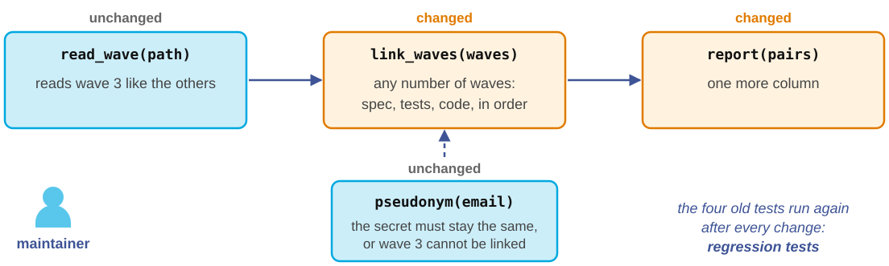

Maintenance example: the third wave arrives
“Great! In spring we run a third wave. Can we link all three?” (Ana, a year later)

The maintainer goes through the flow again on a small scale. First the specification changes, then the tests, then the code